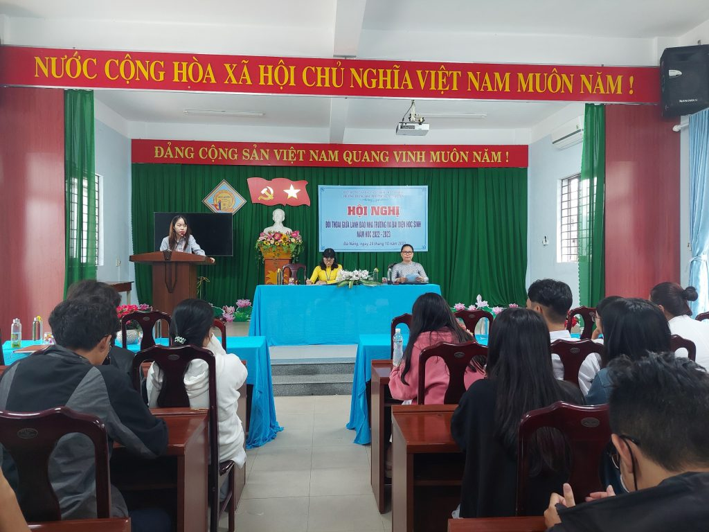
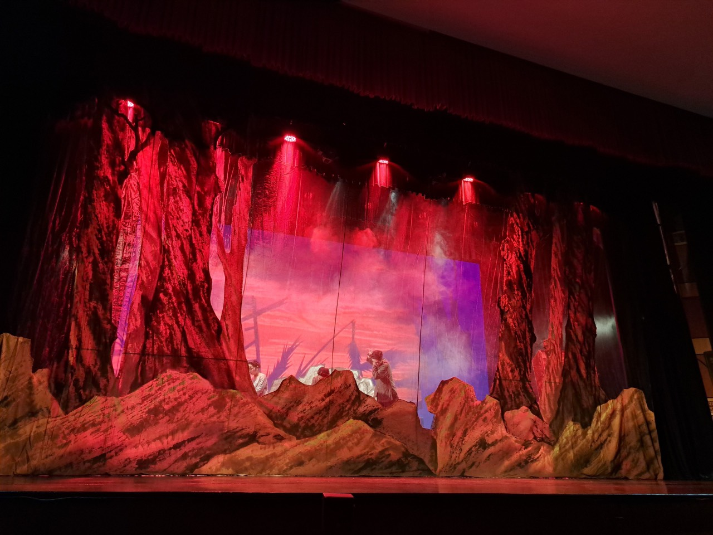
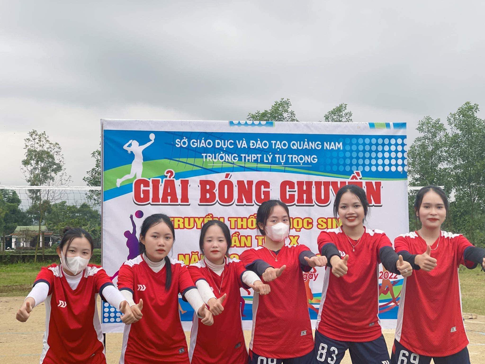

tin tức hoạt động trường

KỶ NIỆM 93 NĂM NGÀY THÀNH LẬP ĐẢNG CỘNG SảN VIỆT NAM
( 03/02/1930 – 03/02/2023)

CẢM NHẬN VẺ ĐẸP CỦA SÂN KHẤU DÂN GIAN
Chương trình văn nghệ chào mừng học sinh mới sắp được mở. Cựu học sinh nhanh tay đăng kí để dành cho mình những giải thưởng . . .
DANH SÁCH HỌC SINH CÓ ĐIỂM CAO ?
Học thì giỏi, chơi thì vui, nhưng vừa học vừa chơi mà vẫn có điểm cao mới là tốt. Sau đây là top những học sinh có điểm cao ngất ngưỡng.
TRIỂN KHAI PHONG TRÀO HỌC TỐT DẠY TỐT
Tăng điểm phong trào cho lớp có thành tích tốt
Tăng điểm đánh giá cho giáo viên có cách dạy tích cực.

GIẢI BÓNG CHUYỀN LẦN THỨ "X"
Trong thời gian 1 tháng, nhà trường đã tổ chức thành công giải bóng chuyền truyền thống lần thứ X, năm học 2022 – 2023, với sự tham gia của 36 đội thi đấu nam – nữ đến từ 18 chi đoàn.
các hoạt động thường xuyên
Hoạt động ngoài giờ lên lớp
Sự kiện "chữ thập đỏ" ủng hộ bà con Thăng Bình.
18/02 - 29/02 | Đăng bởi: NPLuan
Chuẩn bị cho kế hoạch văn nghệ chào cờ tuần tới.
27/02 - 06/02 | Đăng bởi: NPLuan
Triển khai kế hoạch "trồng cây gây rừng".
01/01 - 31/12 | Đăng bởi: NPLuan
Hoạt động trong giờ học
Tiến hành kiểm tra 1 tiết tất cả các môn khối 10 và khối 11.
27/02 - 06/03 | Đăng bởi: NPLuan
Nộp bản thiết kế mỹ thuật.
27/02 - 06/03 | Đăng bởi: NPLuan
Kiểm tra số giờ @ trong tiết sinh hoạt lớp.
06/03 - 06/03 | Đăng bởi: NPLuan
Các lớp khối chiều vào lớp sớm hơn 15 phút và được tan học sớm hơn 15 phút.
Không rõ time | Đăng bởi: NPLuan
Hoạt động ngoài giờ ra chơi
Nhận đề cương ôn tập ở phòng dịch vụ của trường.
Sáng thứ 2 | Đăng bởi: NPLuan
Tập thể dục - nâng cao xuất khỏe.
Chiều thứ 4 | Đăng bởi: NPLuan
Giờ ra chơi được tăng thêm 10p: cụ thể từ 15p tăng lên 25p.
Chiều thứ 4 | Đăng bởi: NPLuan
Dọn vệ sinh sân trường trước và sau.
Chiều thứ 7 | Đăng bởi: NPLuan
văn nghệ chào mừng 40 năm giả phóng "thăng bình"
Video
tiết mục đặc sắc
đầu tư siêu khủng
với sự góp mặt cuả hầu hết các thầy cô
dàn ca sĩ đến từ quảng nam
lần đầu tiên được tổ chức tại trường THPT Lý Tự Trọng
tài liệu quan trọng
Tài liệu ôn thi tốt nghiệp Toán.
Tải xuống tài liệu
Tài liệu ôn thi tốt nghiệp Ngữ Văn.
Tải xuống tài liệu
Tài liệu ôn thi tốt nghiệp Tiếng Anh.
Tải xuống tài liệu
Tài liệu ôn thi tổng hợp: Sử - Địa - Công dân.
Tải xuống tài liệu